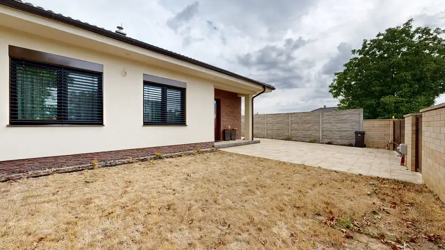

Kompletne zrekonštruovaný a zariadený 2-izbový byt v top lokalite Piešťan (Teplická ul.)
Piešťany
- Dispozícia2-izbový
- Plocha49 m²
- StavKompletná rekonštrukcia
- VlastníctvoOsobné
O nehnuteľnosti
Hľadáte bývanie v Piešťanoch, kde nemusíte riešiť žiadne dodatočné investície ani prerábky? Chcete bývať na skok od centra, no zároveň v obklopení zelene a pokoja?EXKLUZÍVNE vám ponúkame na predaj útulný, kompletne zrekonštruovaný 2-izbový byt s balkónom vo vyhľadávanej a tichej lokalite na Teplickej ulici v Piešťanoch. Byt sa predáva kompletne zariadený – stačí sa len nasťahovať.Nezmeškajte virtuálnu prehliadku pozrieť byt online - https://my.matterport.com/show/?m=PP2omUgD7pzZákladné technické parametre:- Úžitková plocha bytu: 49 m²- Balkón: 1,8 m²- Pivnica: 1,2 m² (latková, ideálna na uskladnenie bicyklov či sezónnych vecí)- Poschodie: 2. poschodie (v nízkopodlažnom bytovom dome bez výťahu)- Orientácia: Byt je orientovaný na východnú stranu (príjemný chládok počas horúcich letných dní, byt sa neprehrieva)Mesačné náklady (ideálne aj ako investícia):- Správca: 169 € / mesiac- Elektrina: 17 € / mesiacStav bytu a zariadenie:Byt prešiel pred 5 rokmi kompletnou rekonštrukciou (rozvody elektriny, podlahy, stierky, sanita, kuchynská linka). Je mimoriadne udržiavaný, čistý a pôsobí veľmi príjemným dojmom. V byte ostáva kompletné zariadenie, čo z neho robí ideálne štartovacie bývanie pre mladý pár alebo perfektnú investičnú príležitosť na okamžitý prenájom bez ďalších nákladov.Bytový dom a plánovaná modernizácia:Bytový dom je nízkopodlažný, čistý a slušný. Má už zrealizovanú novú strechu a zateplenú fasádu. V najbližšom období sú naplánované a schválené tieto práce:- Výmena kompletných stupačiek (pribudnú nové rozvody)- Kompletná rekonštrukcia balkónov (po rekonštrukcii bude balkón ako nový, čo ešte viac zvýši hodnotu celej nehnuteľnosti)Výnimočná lokalita:Teplická ulica patrí medzi najobľúbenejšie adresy v Piešťanoch. Ponúka dokonalý balans – v okolí domu je množstvo urastenej zelene a parkovanie, no zároveň máte kompletnú občiansku vybavenosť (školy, škôlky, obchody, kaviarne) a samotné centrum mesta v pešej dostupnosti len pár minút.Cena nehnuteľnosti: 174 990 €(Cena je konečná, vrátane kompletného právneho servisu, poplatkov za vklad na kataster a asistencie pri prepise energií).Zaujala vás táto ponuka?Neváhajte ma kontaktovať a dohodnite si obhliadku. Tento byt si vás získa svojou atmosférou hneď pri prvej návšteve.Kontakt:Tomáš Šibal0908 685 804sibal@casmar.sk
Parametre
| Cena vrátane energií | Nie |
|---|---|
| Druh | 2 izbový byt |
| Dátum zverejnenia | 2. 10. 2026 |
| Stav nehnuteľnosti | Kompletná rekonštrukcia |
| Typ | Predaj |
| Vlastníctvo | Osobné |
| Úžitková plocha | 49 m² |
Kde to je


Mohlo by Vás zaujímať
 DomNové10
144 990 €VIRTUÁLNA PREHLIADKA / Priestranný rodinný dom s veľkým potenciálom
Boleráz
133 m²
Hľadáte nehnuteľnosť, ktorú si pretvoríte presne podľa svojich predstáv? Ponúkame na predaj samostatne stojaci rodinný dom v obci Boleráz,…
DomNové10
144 990 €VIRTUÁLNA PREHLIADKA / Priestranný rodinný dom s veľkým potenciálom
Boleráz
133 m²
Hľadáte nehnuteľnosť, ktorú si pretvoríte presne podľa svojich predstáv? Ponúkame na predaj samostatne stojaci rodinný dom v obci Boleráz,…
 Chalupa, rekreačný domčekNové10
164 990 €Novostavba chaty s výhľadom na Kunovskú priehradu – bezpečie a komfort
Senica
95 m²
Hľadáte únik z mesta, kde sa spája moderné bývanie s relaxom v prírode? Ponúkame Vám na predaj novostavbu chaty v prestížnej a vyhľadávanej…
Chalupa, rekreačný domčekNové10
164 990 €Novostavba chaty s výhľadom na Kunovskú priehradu – bezpečie a komfort
Senica
95 m²
Hľadáte únik z mesta, kde sa spája moderné bývanie s relaxom v prírode? Ponúkame Vám na predaj novostavbu chaty v prestížnej a vyhľadávanej…

DomNové10 349 990 €Moderný 4-izbový bungalov s maximálnym súkromím a veľkým pozemkom Dolná Krupá 130 m² Ekluzívne na predaj! Moderný 4-izbový bungalov s maximálnym súkromím a veľkým pozemkom v Dolnej KrupejHľadáte rodinné bývanie, kde budete mať…